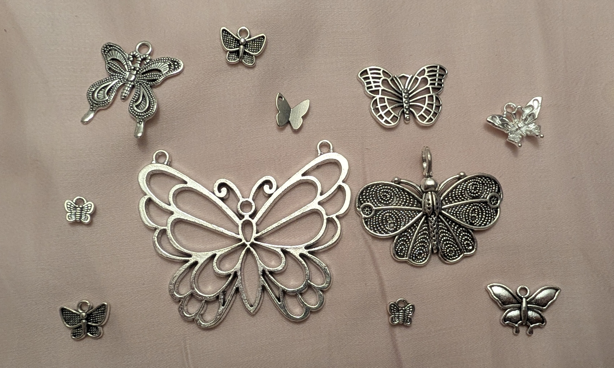
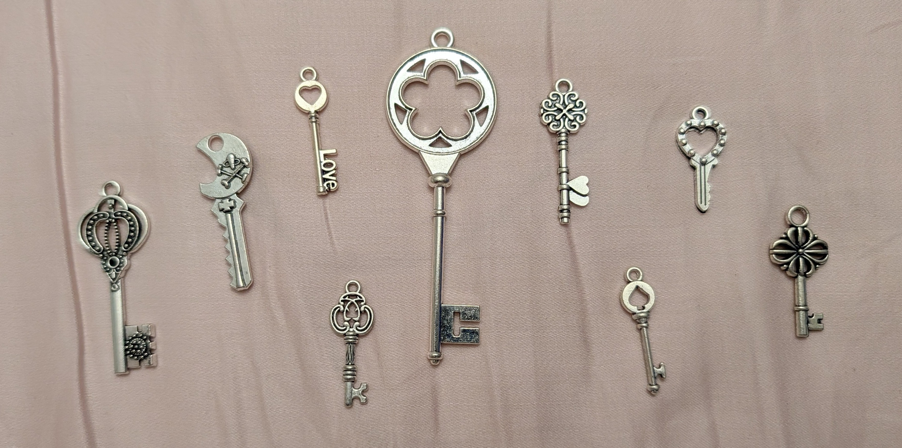
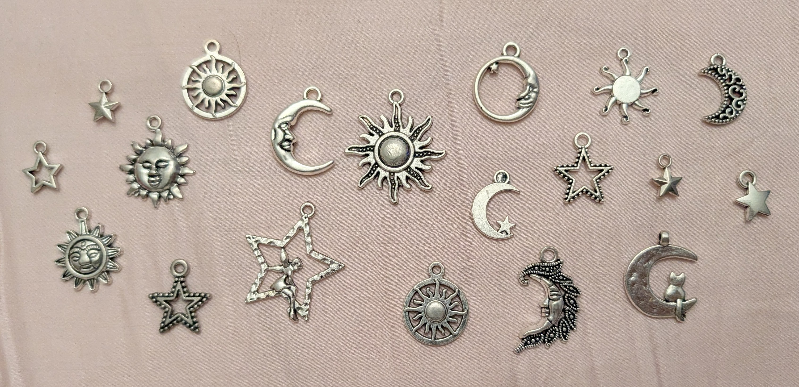

I like making jewelry a lot! I've made several different types of them, including beaded, stringed, wired, and chained. However, I will say, simple metal jewelry is my favourite type. Why, you may ask? Well,
Because of all of these reasons, I establish the following: metal jewelry is one of the best types of jewelry out there.
There are a lot of different types of charms I like! Some are shown below:



Click the button for each charm you see!
note: you might miss a few button messages if you spam it, so keep that in mind and just count the pictures instead of taking shortcuts!
Charm count: 0
They look cool, right?
I know I'm right. You WILL believe me. You WILL agree with me. You don't have a choice.
ANYWAAAAYS! GO OUT AND BUY CHARMS GUYS. It's cheaper than buying premade jewelry, you'll get a new hobby, and you'll have pretty charms to stare at for the rest of your life! ahaha. aha. ha.
Adios!
- evezu, late night (pls send help.)